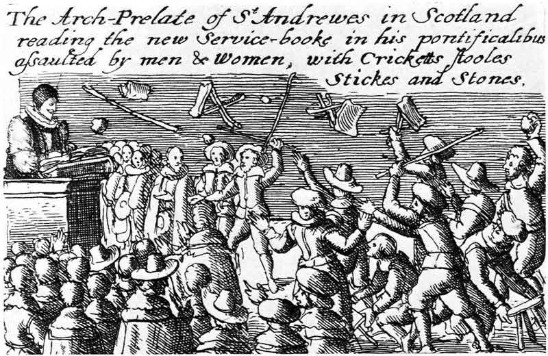

July 23rds
Like most people, I imagine, it sticks out to me whenever I see my birthday (July 23rd) come up in day-to-day life. I thought it would be fun to keep track of the interesting July 23rds I come across in the wild, both historical and fictional. If you know of any, please reach out to me at the email address at the bottom of this page.
A Note on Calendars and Dates
The history of how we quantify our history (along with our present and future) is beyond the scope of this page; doubtless there are innumerable Chronometric Chatrooms and Horological Forums where those interested exalt in and viciously debate timekeeping systems both realized and theoretical. The curious reader is left to find such spaces on their own.
The most pressing concern for a multi-millennia-spanning chronicle, such as this one, is the switch from the Julian to Gregorian calendar: in 1582, the papal bull Inter gravissimas set out to reform the Julian calendar, in use since 46 BCE, in the hope of easing the calculation of the date of Easter. Catholic powers, such as Spain and France, acted with all the timeous piety they could muster and promptly deleted ten days from their year in order to align with Pope Gregory XIII's horological visions; the Protestant and Orthodox countries of Europe reacted with the papal paranoia and Byzantine indifference characteristic to their respective creeds. (Some Protestants, spirits attuned to slightest whisper of papist plot in the air, water, and earth, rejected the bull as bull on the grounds it was a conspiracy by a grand Catholic chronometric cabal intent on luring them back into the gilded-folds of Rome's embrace—the truth to such accusations is, as of the time of writing, still undetermined.)
For one reason or another, anyway, continent-wide adoption of the Gregorian calendar was slow and uneven. (Britain did not officially adopt it until 1752; Greece, in her antiquarian beauty, waited until 1923) This means that, for a sizable and geographically shifting chunk of European history—and World history, for that matter, the Gregorian Calendar having become, through the ravages of colonialism, the de facto calendar of the World, and certainly the timekeeping scheme with the most blood behind its adoption—there were at least two different July 23rds. (This website, alas, has been compromised by said cabal in more ways than one. Gregory's calendar is a colonistic, chronometric violence I can do little to escape. While a calendar like the radically dechristianing calendrier républicain may be of historical interest, it lacks a July, and is thus outside the purview of this page.) Most countries solved this problem with a Dual dating system, marking documents with both an "Old Style" (O.S. i.e., Julian) and a "New Style" (N.S. i.e., Gregorian) date.
For the purposes of this page, such as they are, the 23rd of July, as an object, takes precedence over all else. If something is presented to me as happening on July 23rd, that is when it happened. If I am taking something from a modern piece of historical scholarship which describes events that occurred in a temporally/geographically Julian space, it is possible the author will have already done the "translation" for me. In that case, July 23rd is the Gregorian July 23rd of the scholar. On the other hand, when Pepys, for example, writes that he did "ejaculate my thanks" to "Almighty God" on July 23rd, 1666, it is his Julian July 23rd that matters. It is most important that an event was recorded in the spirit of July 23rd than that it aligns with whatever arbitrary calendar sets our modern July 23rd.
July 23rd, 54
Papyrus Oxyrhynchus 297
Ammonius to his father Ammonius greeting. Kindly write me in a note the record of the sheep, how many more you have by the lambing beyond those included in the first return ... Good-bye. The fourteenth year of Tiberius Claudius Caesar Augustus Germanicus Imperator, Epeiph 29.*
[Epeiph—the eleventh month of Egyptian and Coptic (or Alexandrian) calendars. Epeiph 29th is equivalent to July 23rd on the Julian calendar.]
Saturday, July 23rd, 651
The first solar eclipse of Saros Series 114 (called "Member 1") occurs. It is visible throughout Southern Africa, the Indian Ocean, and parts of present-day Indonesia.*

Sunday, July 23rd, 1346
Edward III camps with his army overnight in the Norman town of Cormolain on the way to the battle of Crécy
Excerpts from Atravers le Cotentin by André Plaisse:*
Having thoroughly ravaged the Cotentin—with the exception of the episcopal city of Coutances, situated too far to the west—the English ought to have galloped eastward without hesitation to engage in a decisive battle against Philip of Valois. Yet, they did not! To sate their frenzy for plunder, they set their sights on the Château de Torigni, located a good three leagues south of Saint-Lô.
...
Since the Château de Torigni had been easily secured by the vanguard, Edward III deemed it unnecessary to continue his march down the Vire Valley. That very evening—after halting, as some accounts claim, at the Abbey of Cerisy (despite its lying well off his intended route)—he took up quarters in the village of Cormolain, "where the enemy had lodged the previous night."
Friday, July 23rd, 1373
St. Bridget of Sweden dies in Rome. July 23rd is her feast day.

Monday, July 23rd, 1520
Albrecht Durer's Diary of a Journey in the Netherlands
So I started from Mainz, where the Main flows into the Rhine, and it was the Monday after Mary Magdalen's Day, and I paid 10 thaler for meat and bread, and for eggs and pears 9 thaler. Here, too, Leonhard Goldschmidt gave me wine and fowls in the boat to cook on the way to Cologne. Master Jobst's brother likewise gave me a bottle of wine, and the painters gave me two bottles of wine in the boat. From there we came to Elfeld, where I showed my letter and they took no toll; from there we came to Rudesheim and I gave 2 white pf. for loading the boat; then we came to Ehrenfels, and there I showed my letter, but I had to give two gold florins; if, however, I were to bring them a free pass within two months, the customs officer would give me back the 2 gold florins. From there we came to Bacharach, and there I had to promise in writing that I would either bring them a free pass in two months, or pay the toll; from there we came to Caub, and there again I showed my pass, but it would carry me no further, and I had to promise in writing as before; there I spent 11 thaler.
Thursday, July 23rd, 1601
Assize Indictments of Earls Colne
Geo Ockly of Earls Colne labourer, 6.5. at Wakes Colne stole five sheep each worth 4s. and a lamb worth 2s., belonging to Jn Potter pleads not guilty; guilty; hanged. witness: Jn Potter
Tuesday, July 23rd, 1630
John Winthrop writes to his wife Margaret from New England, having arrived just weeks earlier in June. She will join him the following year
My deare wife,
I wrote to thee by my brother Arthur, but I durst write no more, then I need not care though it miscarried, for I found him the olde man still, yet I would haue kept him to ease my brother, but that his owne desire to returne and the scarcitye of prouisions heer, yeilded the stronger reason to let him goe. Now (my good wife) let vs ioyne in praysinge our mercifull God, that (howsoeuer he hath Afflicted vs, both generally and perticularly mine owne family in his stroke vpon my sonne Henry) yet my selfe and the rest of our children and familye are safe and in health, and that he vpholds our heartes that we fainte not in all our troubles, but can yet waite for a good issue. And howsoeuer our fare be but coarse in respect of what we formerly had (pease, puddinges, and fish, beinge our ordinary diet) yet he makes it sweet and wholsome to vs, that I may truely say I desire no better: Besides in this, that he beginnes with vs thus in Affliction, it is the greater argument to vs of his loue, and of the goodnesse of the worke, which we are about, for Sathan bends his forces against vs, and stirres vp his instruments to all kinde of mischeife, so that I thinke heere are some persons who neuer shewed so much wickednesse in England as they haue doone heer. Therefore be not discouraged (my deare wife) by any thinge thou shalt heere from hence, for I see no cause to repente of our comminge hether, and thou seest (by our experience) that God can bringe safe hether (euen the tenderest woemen and the yongest children as he did many in diuerse shippes, though the voyage were more teadious then formerly hath been knowne in this season) be sure to be warme clothed, and to haue store of fresh prouisions, meale, egges putt vp in salt or grounde mault, butter ote meale, pease, and fruits, and a large stronge chest or 2: well locked, to keepe these prouisions in, and be sure they be bestowed in the shippe where they may be readyly come by, (which the boatswaine will see to and the quarter masters, if they be rewarded before hande) but for these thinges my sonne will take care: be sure to haue ready at sea 2: or 3: skillettes of seuerall syzes, a large fryinge panne, a small stewinge panne, and a Case to boyle a pudding in; store of linnen for vse at sea, and sacke to bestowe amonge the saylers: some drinkinge vessells, and peuter and other vessells. and for phisick you shall need no other but a pound of Doctor Wrightes Electuarium lenitium, and his direction to vse it a gallon of iuice of sciruy grasse to drinke a litle for 5: or 6: morninges togither with some saltpeter dissolued in it, and a little grated or sliced nutmege.
Thou must be sure to bringe no more companye, then so many as shall haue full Prouision for a yeare and halfe for though the earth heere be very fertile yet there must be tyme and meanes to rayse it, if we haue corne enough we may liue plentifully: yet all these are but the meanes which God hath ordayned to doe vs good by: our eyes must be towardes him, who as he can withhould blessing from the strongest meanes, so he can giue sufficient vertue to the weakest. I am so streightned with must businesse, as can no waye satisfie my selfe in wrightinge to thee. the Lorde will in due tyme lett vs see the faces of each other againe to our great comforte: Now the Lord in mercye blesse guide and supporte thee, I kisse and embrace thee my deare wife, I kisse and blesse you all my deare children, Forth, Mary, Deane, Sam and the other: the Lorde keepe you all and worke his true feare in your heartes. the blessing of the Lorde be vpon all my seruantes whom salute from me, Jo: Sanford, Amy etc. Goldston, Pease, Chote etc.: my good freindes at Castlins and all my good neighbours, Goodman Cole and his good wife, and all the rest:
Remember to come well furnished, with linnen, woollen, some more beddinge, brasse, peuter, leather bottells, drinkinge hornes etc.: let my sonne, provide 12: axes of severall sortes of the Braintree Smithe, or some other prime workman, whateuer they coste, and some Augers great and smale, and many other necessaryes which I cant now thinke of, as Candle, Sope, and store of beife suett, etc.: once againe farewell my deare wife. Thy faithfull husband
Jo: Winthrop.
Charlton in N: England
[N.B. There is also an interesting letter from Winthrop to his son John, Jr. from the same day.]
Thursday, July 23rd, 1637
The first public use of the Church of Scotland's 1637 Scottish Prayer Book—a revision of the Book of Common Prayer initiated by Charles I to align the Scottish church more with the Church of England—incites a strong reaction at St. Giles' Cathedral in Edinburgh, led by one Jenny Geddes
From James Kirkton's The Secret and True History of the Church of Scotland from the Restoration to the year 1678:
But he who was to officiat in the high-church had no sooner begun to read, till he was interrupted by a tumult. First, ane unknown obscure woman threw her stool at his head; a number of others did the like by her example; the whole multitude clapt their hands; some cried, A pope! A pope! The lords of council and magistrates were threatened by the people when they went about to still the tumult; both preacher and reader were forced out of the church and followed home with a shower of stones, hardly escaping with their lives.*
From James Cameron Lee's St. Giles', Edinburgh:
The Bishop from the pulpit, who watched the rubric to see that it was rightly followed; asked the audience to be calm, and allow the service to proceed, and turning to the dean told him to go on to the collect for the day. At this, a herbwoman, Jenny Geddes by name, who had a market-stall near where the Tron Kirk now stands, started up in wrath, and catching the word "collect" which the bishop had used, shouted aloud, "Deil colic the wame of thee; out, thou false thief! dost thou say mass at my lug?" and snatching up the stool on which she sat, hurled it at his head, "intending to have given him a ticket of remembrance, but jouking became his safeguard at that time." Others followed this woman's example.*
The riot at St. Giles' was the spark which set off the Bishops' Wars, the first of the Wars of the Three Kingdoms. In this way, Jenny Geddes' attack lead directly to the First and Second English Civil Wars, the Irish Confederate Wars, the Anglo-Scottish War, the execution of Charles I, the rise of Cromwell and the establishment of the Commonwealth of England, which controlled Britain until the Stuart Restoration in 1660.
From Arthur Penrhyn Stanley's Lectures on the history of the Church of Scotland:
Never, except in the days of the French Revolution, did a popular tumult lead to such important results. The stool which was on that occasion flung at the head of the Dean of Edinburgh extinguished the English Liturgy entirely in Scotland for the seventeenth century, to a great extent even till the nineteenth; and gave to the civil war of England an impulse which only ended in the overthrow of the Church and Monarchy.*

Thursday, July 23rd, 1657
The Diary of Ralph Josselin
we met at W. Webs at Gaines Colne to seek god, the lord good to us in the word and prayer. when all was done Mr Clarke the minister of the place told us that coming to us he saw one An Crow (counted a witch) take something out of a pot and lay by a grave, he wonders what was to do, when he drew near he espied some baked pears, and a little thing in shape like a rat, only reddish and without a tail run from them, and vanished away, that he could not tell what became of it, the party said she laid them there to cool, she was under the window where we exercised. I pressed her what I could(,) she protests her innocency, lord be our keeper.
heard as if Dr Wright were very ill, making much bloody urine, lord I leave myself on thee to provide for him, yet let him live in thy sight.
Monday, July 23rd, 1660
This morning Mr. Barlow comes to me, and he and I went forth to a scrivener in Fenchurch Street, whom we found sick of the gout in bed, and signed and sealed our agreement before him.
He urged to have these words (in consideration whereof) to be interlined, which I granted, though against my will.
Met this morning at the office, and afterwards Mr. Barlow by appointment came and dined with me, and both of us very pleasant and pleased. After dinner to my Lord, who took me to Secretary Nicholas, and there before him and Secretary Morris, my Lord and I upon our knees together took our oaths of Allegiance and Supremacy; and the Oath of the Privy Seal, of which I was much glad, though I am not likely to get anything by it at present; but I do desire it, for fear of a turn-out of our office. That done and my Lord gone from me, I went with Mr. Cooling and his brother, and Sam Hartlibb, little Jennings and some others to the King’s Head Tavern at Charing Cross, where after drinking I took boat and so home, where we supped merrily among ourselves (our little boy proving a droll) and so after prayers to bed.
This day my Lord had heard that Mr. Barnwell was dead, but it is not so yet, though he be very ill.
I was troubled all this day with Mr. Cooke, being willing to do him good, but my mind is so taken up with my own business that I cannot.
House of Lords Journal, Volume 11
Order for Col. Hacker to deliver the Warrant for Execution of the late King.
Whereas this House hath been informed from the House of Commons, "That an original Warrant for the horrid Murder of His late Majesty remains in the Custody of Colonel Hacker, now a Prisoner in The Tower of London:"
It is ORDERED, by the Lords in Parliament assembled, That the Lieutenant of The Tower of London be required to examine the said Colonel Hacker, touching the said original Warrant; and that the same be returned into this House To-morrow Morning, by Nine of the Clock, either by himself or by his Deputy, it being to be used in this House at that Time upon special Occasion, now depending before their Lordships.
Col. Hacker was a staunch Parliamentarian from the outset of the English Civil War, and served in Leicestershire. He later served in the Invasion of Scotland. He was one of the officers charged with the custody of Charles I, and was intimately involved in the supervision of the King's execution.
His trial took place on October 15th, 1660; he was hanged four days later.

Tuesday, July 23rd, 1661
Put on my mourning. Made visits to Sir W. Pen and Batten. Then to Westminster, and at the Hall staid talking with Mrs. Michell a good while, and in the afternoon, finding myself unfit for business, I went to the Theatre, and saw “Brenoralt,” I never saw before. It seemed a good play, but ill acted; only I sat before Mrs. Palmer, the King’s mistress, and filled my eyes with her, which much pleased me. Then to my father’s, where by my desire I met my uncle Thomas, and discoursed of my uncle’s will to him, and did satisfy [him] as well as I could. So to my uncle Wight’s, but found him out of doors, but my aunt I saw and staid a while, and so home and to bed. Troubled to hear how proud and idle Pall is grown, that I am resolved not to keep her.
Wednesday, July 23rd, 1662
This morning angry a little in the morning, and my house being so much out of order makes me a little pettish. I went to the office, and there dispatched business by myself, and so again in the afternoon; being a little vexed that my brother Tom, by his neglect, do fail to get a coach for my wife and maid this week, by which she will not be at Brampton Feast, to meet my Lady at my father’s. At night home, and late packing up things in order to their going to Brampton to-morrow, and so to bed, quite out of sorts in my mind by reason that the weather is so bad, and my house all full of wet, and the trouble of going from one house to another to Sir W. Pen’s upon every occasion. Besides much disturbed by reason of the talk up and down the town, that my Lord Sandwich is lost; but I trust in God the contrary.
Thursday, July 23rd, 1663
The Diary of Samuel Pepys
Up and to my office, and thence by information from Mr. Ackworth I went down to Woolwich, and mustered the three East India ships that lie there, believing that there is great-juggling between the Pursers and Clerks of the Cheque in cheating the King of the wages and victuals of men that do not give attendance, and I found very few on board.
So to the yard, and there mustered the yard, and found many faults, and discharged several fellows that were absent from their business.
I staid also at Mr. Ackworth’s desire at dinner with him and his wife, and there was a simple fellow, a gentleman I believe of the Court, their kinsmen, that threatened me I could have little discourse or begin, acquaintance with Ackworth’s wife, and so after dinner away, with all haste home, and there found Sir J. Minnes and Sir W. Batten at the office, and by Sir W. Batten’s testimony and Sir G. Carteret’s concurrence was forced to consent to a business of Captain Cocke’s timber, as bad as anything we have lately disputed about, and all through Mr. Coventry’s not being with us.
So up and to supper with Sir W. Batten upon a soused mullett, very good meat, and so home and to bed.
Saturday, July 23rd, 1664
Up, and all the morning at the office. At noon to the ’Change, where I took occasion to break the business of my Lord Chancellor’s timber to Mr. Coventry in the best manner I could. He professed to me, that, till, Sir G. Carteret did speake of it at the table, after our officers were gone to survey it, he did not know that my Lord Chancellor had any thing to do with it; but now he says that he had been told by the Duke that Sir G. Carteret had spoke to him about it, and that he had told the Duke that, were he in my Lord Chancellor’s case, if he were his father, he would rather fling away the gains of two or 3,000l., than have it said that the timber, which should have been the King’s, if it had continued the Duke of Albemarle’s, was concealed by us in favour of my Lord Chancellor; for, says he, he is a great man, and all such as he, and he himself particularly, have a great many enemies that would be glad of such an advantage against him.
When I told him it was strange that Sir J. Minnes and Sir G. Carteret, that knew my Lord Chancellor’s concernment therein, should not at first inform us, he answered me that for Sir J. Minnes, he is looked upon to be an old good companion, but by nobody at the other end of the towne as any man of business, and that my Lord Chancellor, he dares say, never did tell him of it, only Sir G. Carteret, he do believe, must needs know it, for he and Sir J. Shaw are the greatest confidants he hath in the world.
So for himself, he said, he would not mince the matter, but was resolved to do what was fit, and stand upon his owne legs therein, and that he would speak to the Duke, that he and Sir G. Carteret might be appointed to attend my Lord Chancellor in it.
All this disturbs me mightily. I know not what to say to it, nor how to carry myself therein; for a compliance will discommend me to Mr. Coventry, and a discompliance to my Lord Chancellor. But I think to let it alone, or at least meddle in it as little more as I can.
From thence walked toward Westminster, and being in an idle and wanton humour, walked through Fleet Alley, and there stood a most pretty wench at one of the doors, so I took a turn or two, but what by sense of honour and conscience I would not go in, but much against my will took coach and away, and away to Westminster Hall, and there ’light of Mrs. Lane, and plotted with her to go over the water. So met at White’s stairs in Chanel Row, and over to the old house at Lambeth Marsh, and there eat and drank, and had my pleasure of her twice, she being the strangest woman in talk of love to her husband sometimes, and sometimes again she do not care for him, and yet willing enough to allow me a liberty of doing what I would with her. So spending 5s. or 6s. upon her, I could do what I would, and after an hour’s stay and more back again and set her ashore there again, and I forward to Fleet Street, and called at Fleet Alley, not knowing how to command myself, and went in and there saw what formerly I have been acquainted with, the wickedness of these houses, and the forcing a man to present expense. The woman indeed is a most lovely woman, but I had no courage to meddle with her for fear of her not being wholesome, and so counterfeiting that I had not money enough, it was pretty to see how cunning she was, would not suffer me to have to do in any manner with her after she saw I had no money, but told me then I would not come again, but she now was sure I would come again, but I hope in God I shall not, for though she be one of the prettiest women I ever saw, yet I fear her abusing me.
So desiring God to forgive me for this vanity, I went home, taking some books from my bookseller, and taking his lad home with me, to whom I paid 10l. for books I have laid up money for, and laid out within these three weeks, and shall do no more a great while I hope.
So to my office writing letters, and then home and to bed, weary of the pleasure I have had to-day, and ashamed to think of it.
Sunday, July 23rd, 1665
(Lord’s day). Up very betimes, called by Mr. Cutler, by appointment, and with him in his coach and four horses over London Bridge to Kingston, a very pleasant journey, and at Hampton Court by nine o’clock, and in our way very good and various discourse, as he is a man, that though I think he be a knave, as the world thinks him, yet a man of great experience and worthy to be heard discourse. When we come there, we to Sir W. Coventry’s chamber, and there discoursed long with him, he and I alone, the others being gone away, and so walked together through the garden to the house, where we parted, I observing with a little trouble that he is too great now to expect too much familiarity with, and I find he do not mind me as he used to do, but when I reflect upon him and his business I cannot think much of it, for I do not observe anything but the same great kindness from him. I followed the King to chappell, and there hear a good sermon; and after sermon with my Lord Arlington, Sir Thomas Ingram and others, spoke to the Duke about Tangier, but not to much purpose. I was not invited any whither to dinner, though a stranger, which did also trouble me; but yet I must remember it is a Court, and indeed where most are strangers; but, however, Cutler carried me to Mr. Marriott’s the house-keeper, and there we had a very good dinner and good company, among others Lilly, the painter.
Thence to the councill-chamber, where in a back room I sat all the afternoon, but the councill begun late to sit, and spent most of the time upon Morisco’s Tarr businesse. They sat long, and I forced to follow Sir Thomas Ingram, the Duke, and others, so that when I got free and come to look for Cutler, he was gone with his coach, without leaving any word with any body to tell me so; so that I was forced with great trouble to walk up and down looking of him, and at last forced to get a boat to carry me to Kingston, and there, after eating a bit at a neat inne, which pleased me well, I took boat, and slept all the way, without intermission, from thence to Queenhive, where, it being about two o’clock, too late and too soon to go home to bed, I lay and slept till about four.
Monday, July 23rd, 1666
Up, and to my chamber doing several things there of moment, and then comes Sympson, the Joyner; and he and I with great pains contriving presses to put my books up in: they now growing numerous, and lying one upon another on my chairs, I lose the use to avoyde the trouble of removing them, when I would open a book.
Thence out to the Excise office about business, and then homewards met Colvill, who tells me he hath 1000l. ready for me upon a tally; which pleases me, and yet I know not now what to do with it, having already as much money as is fit for me to have in the house, but I will have it. I did also meet Alderman Backewell, who tells me of the hard usage he now finds from Mr. Fen, in not getting him a bill or two paid, now that he can be no more usefull to him; telling me that what by his being abroad and Shaw’s death he hath lost the ball, but that he doubts not to come to give a kicke at it still, and then he shall be wiser and keepe it while he hath it. But he says he hath a good master, the King, who will not suffer him to be undone, as otherwise he must have been, and I believe him.
So home and to dinner, where I confess, reflecting upon the ease and plenty that I live in, of money, goods, servants, honour, every thing, I could not but with hearty thanks to Almighty God ejaculate my thanks to Him while I was at dinner, to myself.
After dinner to the office and there till five or six o’clock, and then by coach to St. James’s and there with Sir W. Coventry and Sir G. Downing to take the ayre in the Parke. All full of expectation of the fleete’s engagement, but it is not yet. Sir W. Coventry says they are eighty-nine men-of-warr, but one fifth-rate, and that, the Sweepstakes, which carries forty guns. They are most infinitely manned. He tells me the Loyall London, Sir J. Smith (which, by the way, he commends to be the-best ship in the world, large and small), hath above eight hundred men; and moreover takes notice, which is worth notice, that the fleete hath lane now near fourteen days without any demand for a farthingworth of any thing of any kind, but only to get men. He also observes, that with this excesse of men, nevertheless, they have thought fit to leave behind them sixteen ships, which they have robbed of their men, which certainly might have been manned, and they been serviceable in the fight, and yet the fleete well-manned, according to the excesse of supernumeraries, which we hear they have. At least two or three of them might have been left manned, and sent away with the Gottenburgh ships.
They conclude this to be much the best fleete, for force of guns, greatnesse and number of ships and men, that ever England did see; being, as Sir W. Coventry reckons, besides those left behind, eighty-nine men of warr and twenty fire-ships, though we cannot hear that they have with them above eighteen.
The French are not yet joined with the Dutch, which do dissatisfy the Hollanders, and if they should have a defeat, will undo De Witt; the people generally of Holland do hate this league with France.
We cannot think of any business, but lie big with expectation of the issue of this fight, but do conclude that, this fight being over, we shall be able to see the whole issue of the warr, good or bad.
So homeward, and walked over the Parke (St. James’s) with Sir G. Downing, and at White Hall took a coach; and there to supper with much pleasure and to bed.
The Diary of Ralph Josselin
dismal tempest with rain, much hurt done by lightening, barns burnt creatures and men killed wounded. one Finchs a quakers barn burnt at Halsted at noon day.
Tuesday, July 23rd, 1667
Up betimes and to the office, doing something towards our great account to the Lords Commissioners of the Treasury, and anon the office sat, and all the morning doing business. At noon home to dinner, and then close to my business all the afternoon. In the evening Sir R. Ford is come back from the Prince and tells Sir W. Batten and me how basely Sir W. Pen received our letter we sent him about the prizes at Hull, and slily answered him about the Prince’s leaving all his concerns to him, but the Prince did it afterward by letter brought by Sir R. Ford to us, which Sir W. Pen knows not of, but a very rogue he is.
By and by comes sudden news to me by letter from the Clerke of the Cheque at Gravesend, that there were thirty sail of Dutch men-of-war coming up into the Hope this last tide: which I told Sir W. Pen of; but he would not believe it, but laughed, and said it was a fleete of Billanders, and that the guns that were heard was the salutation of the Swede’s Ambassador that comes over with them. But within half an hour comes another letter from Captain Proud, that eight of them were come into the Hope, and thirty more following them, at ten this morning. By and by comes an order from White Hall to send down one of our number to Chatham, fearing that, as they did before, they may make a show first up hither, but then go to Chatham: so my Lord Bruncker do go, and we here are ordered to give notice to the merchant men-of-war, gone below the barricado at Woolwich, to come up again. So with much trouble to supper, home and to bed.
Thursday, July 23rd, 1668
Up, and all day long, but at dinner, at the Office, at work, till I was almost blind, which makes my heart sad."
The Diary of John Evelyn
At the Royal Society, were presented divers glossa petras, and other natural curiosities, found in digging to build the fort at Sheerness. They were just the same as they bring from Malta, pretending them to be viper's teeth, whereas, in truth, they are of a shark, as we found by comparing them with one in our repository.
Sunday, July 23rd, 1679
Kent-Street Fire
From The English Intelligencer, July 24, 1679:*
July 23,
This night between eleven and twelve of the Clock, there happen'd a Fire at one Anthony Spicer's, a Broom-man. next door to the two Cocks, in Kent-street, which burnt very furiously for the time, so that the man of the house, having long lain sick, had much a do to escape. It is not certain whether it happen'd by chance or designedly; but it is rather thought by design, because it began in an out house (where Heath lay) adjoining to the dwelling house, and the Woman declares, That she had not been there at night, neither had she any Fire in her House for two dayes before: Where the Fire began it happened very near a great many piles of Broom-sticks and Birch, which might have proved a very dangerous consequence, but that by the timely blowing up of some houses, and the care and diligence of the Inhabitants thereabouts, put a stop to it, with the loss of about twelve houses in all; but several others are very much battered.
Wednesday, July 23rd, 1692
The Salem Witch Trials:
John Proctor writes from prison after being accused of witchcraft, along with his wife Elizabeth. He would be tried on August 5th of 1692, found guilty, and hanged ten days later
Petition of John Proctor from Prison
Salem-Prison,
Mr. Mather, Mr. Allen , Mr. Moody , Mr. Willard, and Mr. Bailey.Reverend Gentlemen.
The innocency of our Case with the Enmity of our Accusers and our Judges, and Jury, whom nothing but our Innocent Blood will serve their turn, having Condemned us already before our Tryals, being so much incensed and engaged against us by the Devil, makes us bold to Beg and Implore your Favourable Assistance of this our Humble Petition to his Excellency, That if it be possible our Innocent Blood may be spared, which undoubtedly otherwise will be shed, if the Lord doth not mercifully step in. The Magistrates, Ministers, Juries, and all the People in general, being so much inraged and incensed against us by the Delusion of the Devil, which we can term no other, by reason we know in our own Consciences, we are all Innocent Persons. Here are five Persons who have lately confessed themselves to be Witches, and do accuse some of us, of being along with them at a Sacrament, since we were committed into close Prison, which we know to be Lies. Two of the 5 are (Carriers Sons) Youngmen, who would not confess any thing till they tyed them Neck and Heels till the Blood was ready to come out of their Noses, and 'tis credibly believed and reported this was the occasion of making them confess that they never did, by reason they said one had been a Witch a Month, and another five Weeks, and that their Mother had made them so, who has been confined here this nine Weeks. My son William Procter , when he was examin'd, because he would not confess that he was Guilty, when he was Innocent, they tyed him Neck and Heels till the Blood gushed out at his Nose, and would have kept him so 24 Hours, if one more Merciful than the rest, had not taken pity on him, and caused him to be unbound. These actions are very like the Popish Cruelties. They have already undone us in our Estates, and that will not serve their turns, without our Innocent Bloods. If it cannot be granted that we can have our Trials at Boston, we humbly beg that you would endeavour to have these Magistrates changed, and others in their rooms, begging also and beseeching you would be pleased to be here, if not all, some of you at our Trials, hoping thereby you may be the means of saving the sheeding our Innocent Bloods, desiring your Prayers to the Lord in our behalf, we rest your Poor Afflicted Servants,
John Procter , &c.
Having been accused of witchcraft, Martha Emerson is brought before Justices of the Special Court of Oyer and Terminer
From the Salem Witch Musuem:
Martha Emerson was brought by Haverhill Constable William Starling to Salem Town for examination on July 23. Emerson was the daughter of Billerica folk-healer Roger Toothaker and Mary Toothaker. Goodwife Toothaker’s sister was Martha Carrier, who would be accused, convicted, and executed on August 19. Martha Emerson was accused of tormenting Mary Warren and Mary Lacy Jr., as well as supposedly harnessing a man with an enchanted bridle. She denied both charges. When pressed about her use of counter-magic, taught to her by her father, Roger Toothaker, Goody Emerson confessed to that, and more. She implicated her aunt, Martha Carrier, and also Mary Green of Haverhill. Jailed for hurting Mary Warren, Emerson then changed her mind and professed innocence. She had thought that confessing would keep her free, but she remained in jail. On January 10, 1693, her case was declared ignoramus, meaning “we are uninformed,” or “without sufficient evidence.”
From the Massachusetts Supreme Judicial Court, Judicial Archives:
Examination of Martha Emerson
Martha Emorson was examined before Maj'r Gedney & other their Majest'es Justices in Salem
Martha Emorson you are here accused for afflicting: of Mary Warin & Mary Lasey: by witchcraft: what say you: Answer: I never saw them. Richard Carrier: s'd he see her hurt them both yester day, but he had never seen her at the witch meeting: but Mary lasey sen'r s'd that she had seen both Martha Emorson & her mother at the witch meeting. Mary Warin & Mary Lacy fell down when s'd Martha Emorson looked on them: & Mary Lasy was presently well when s'd Emorson took her by the wrist: two more also fell down with her looking on them: but: she denyed that she knew anything of witchcraft.
Mary Warin s'd: that s'd Emersons spectre told her: that: she had rid a man with an inchanted bridle: & Matthew Herriman: was called: to say whether he had bin ridden: so or no: who answered. that last Monday night: he was in a strange condision: and heard it rain & blow: as I thought: but in the morning there had bin no rain: but in the morning my tongue was sore & I could not speak till son two hours high: & Martha Emorson came to our house that morning: as soon as it was light for fire: Mary: Warin being in a long Dumb fitt; signified by holding up her hand that this Harriman was the man that she s'd Emorson s'd she had ridden: but Emorson s'd she knew nothing of it
Emerson was told: that her father: had s'd: he had tought his Daughter Martha so that she had killed a witch: and: that was to take the afflicted persons water & put in in a glass or bottle: & sett it into an oven: Emorson owned she had [kept] a womans urin: in a glass. Emorson was asked: who hindred her from confessing she answered that her Aunt Carrier & good wife Green of Haverill: were before her: good wife Green: was angry with her: because she would not be like her selfe for Green had Inticed her a fortnight: to afflict & she would not: she s'd Greens wife would have her be of: that number: she was asked what Number: she s'd the number of Devils: she complaynd: that: Greens wife & her Aunt Carrier: took her by the throat: & that they would not lett her Confess. she s'd Greens wife had a pigg that use to follo her: but after ward she Denyed all. & s'd: what she had s'd was in hopes to have favour: & now she could not Deny god: that had keept her from that sin: & after s'd though he slay me I will trust in him.
[Reverse of page] Mar. Emerson Exam. Mary Warran Owned before the Grand jury Jan'y 10th 1692 that Martha Emerson had afflicted her severall times before & at this time when she was presant with us Attests *Robert Payne foreman
Thursday, July 23rd, 1722
Benjamin Franklin, aged 16, writes his ninth letter to The New-England Courant as "Silence Dogood". The pseudonym allows him to publish his letters in the Courant, which is printed by his brother James.
Corruptio optimi est pessima.
To the author of the New England Courant.
SIR,
It has been for some Time a Question with me, Whether a Common-wealth suffers more by hypocritical Pretenders to Religion, or by the openly Profane? But some late Thoughts of this Nature, have inclined me to think, that the Hypocrite is the most dangerous Person of the Two, especially if he sustains a Post in the Government, and we consider his Conduct as it regards the Publick. The first Artifice of a State Hypocrite is, by a few savoury Expressions which cost him Nothing, to betray the best Men in his Country into an Opinion of his Goodness; and if the Country wherein he lives is noted for the Purity of Religion, he the more easily gains his End, and consequently may more justly be expos'd and detested. A notoriously profane Person in a private Capacity, ruins himself, and perhaps forwards the Destruction of a few of his Equals; but a publick Hypocrite every day deceives his betters, and makes them the Ignorant Trumpeters of his supposed Godliness: They take him for a Saint, and pass him for one, without considering that they are (as it were) the Instruments of publick Mischief out of Conscince, and ruin their Country for God's sake.
This Political Description of a Hypocrite, may (for ought I know) be taken for a new Doctrine by some of your Readers; but let them consider, that a little Religion, and a little Honesty, goes a great way in Courts. 'Tis not inconsistent with Charity to distrust a Religious Man in Power, tho' he may be a good Man; he has many Temptations "to propagate publick Destruction for Personal Advantages and Security:" And if his Natural Temper be covetous, and his Actions often contradict his pious Discourse, we may with great Reason conclude, that he has some other Design in his Religion besides barely getting to Heaven. But the most dangerous Hypocrite in a Common-Wealth, is one who leaves the Gospel for the sake of the Law: A Man compounded of Law and Gospel, is able to cheat a whole Country with his Religion, and then destroy them under Colour of Law: And here the Clergy are in great Danger of being deceiv'd, and the People of being deceiv'd by the Clergy, until the Monster arrives to such Power and Wealth, that he is out of the reach of both, and can oppress the People without their own blind Assistance. And it is a sad Observation, that when the People too late see their Error, yet the Clergy still persist in their Encomiums on the Hypocrite; and when he happens to die for the Good of his Country, without leaving behind him the Memory of one good Action, he shall be sure to have his Funeral Sermon stuff'd with Pious Expressions which he dropt at such a Time, and at such a Place, and on such an Occasion; than which nothing can be more prejudicial to the Interest of Religion, nor indeed to the Memory of the Person deceas'd. The Reason of this Blindness in the Clergy is, because they are honourably supported (as they ought to be) by their People, and see nor feel nothing of the Oppression which is obvious and burdensome to every one else.
But this Subject raises in me an Indignation not to be born; and if we have had, or are like to have any Instances of this Nature in New England, we cannot better manifest our Love to Religion and the Country, than by setting the Deceivers in a true Light, and undeceiving the Deceived, however such Discoveries may be represented by the ignorant or designing Enemies of our Peace and Safety.
I shall conclude with a Paragraph or two from an ingenious Political Writer in the London Journal, the better to convince your Readers, that Publick Destruction may be easily carry'd on by hypocritical Pretenders to Religion.
"A raging Passion for immoderate Gain had made Men universally and intensely hard-hearted: They were every where devouring one another. And yet the Directors and their Accomplices, who were the acting Instruments of all this outrageous Madness and Mischief, set up for wonderful pious Persons, while they were defying Almighty God, and plundering Men; and they set apart a Fund of Subscriptions for charitable Uses; that is, they mercilesly made a whole People Beggars, and charitably supported a few necessitous and worthless FAVOURITES. I doubt not, but if the Villany had gone on with Success, they would have had their Names handed down to Posterity with Encomiums; as the Names of other publick Robbers have been! We have Historians and ODE MAKERS now living, very proper for such a Task. It is certain, that most People did, at one Time, believe the Directors to be great and worthy Persons. And an honest Country Clergyman told me last Summer, upon the Road, that Sir John was an excellent publick-spirited Person, for that he had beautified his Chancel."Upon the whole we must not judge of one another by their best Actions; since the worst Men do some Good, and all Men make fine Professions: But we must judge of Men by the whole of their Conduct, and the Effects of it. Thorough Honesty requires great and long Proof, since many a Man, long thought honest, has at length proved a Knave. And it is from judging without Proof, or false Proof, that Mankind continue Unhappy."
I am, Sir,
Your Servant,
SILENCE DOGOOD.
Sunday, July 23rd, 1724
Handel completes Tamerlano; the work is first performed on October 31st of the same year
On the last folio of the autograph manuscript:*
Fine dell Opera | Comminciata li 3/ di Luglio e finita li 23. | anno 1724
Thursday, July 23rd, 1729
Henry St John, 1st Viscount Bolingbroke, writes a letter to Johnathan Swift, Alexander Pope, and John Gay
FROM LORD BOLINGBROKE TO THE THREE YAHOOS OF TWICKENHAM.
JONATHAN, Alexander, John, most excellent triumvirs of Parnassus, though you are probably very indifferent where I am, or what I am doing; yet I resolve to believe the contrary. I persuade myself, that you have sent at least fifteen times within this fortnight to Dawley farm, and that you are extremely mortified at my long silence. To relieve you therefore from this great anxiety of mind, I can do no less than write a few lines to you; and I please myself beforehand with the vast pleasure which this epistle must needs give you. That I may add to this pleasure, and give you farther proofs of my beneficent temper, I will likewise inform you, that I shall be in your neighbourhood again by the end of next week; by which time I hope that Jonathan's imagination of business, will be succeeded by some imagination more becoming a professor of that divine science, la bagatelle. Adieu, Jonathan, Alexander, John! Mirth be with you.
From the banks of the Severn
Wednesday, July 23rd, 1738
Handel begins the composition of Saul; the work is finished in September of the same year and first performed January 16th, 1739.
Friday, July 23rd, 1745
The Jacobite Rising of 1745 begins when Bonnie Prince Charlie lands in the Outer Hebrides of Scotland.
Friday, July 23rd, 1756
Eight participants in the Swedish Coup of 1756, in which Queen Louisa Ulrika attempted to reinstate absolute monarchy, are executed in Stockholm.
Saturday, July 23rd, 1774
An Account of Some Poisonous Fish in The South Seas
An excerpt from a Letter to Sir John Pringle, Bart. P. R. S. from Mr. William Anderson, Late Surgeon's Mate on Board His Majesty's Ship the Resolution:
[O]n board His Majesty's ship the Resolution, off the Island Malicolo, in The South Sea, three fish, of the same species, that had been caught, being dressed for dinner, affected all those, who ate of them, in an uncommon manner; but five persons, who had eaten of one of them, were more severely attacked than the rest. Immediately after eating, nothing was felt but some uneasiness (or such pain as follows from swallowing any acrid substance) in the mouth and throat. About two in the afternoon, some felt an uneasiness in the stomach, with an inclination to vomit; but it was near the evening before those who suffered most were affected. The symptoms at first were universal lassitude and weakness, followed by a retching; and in some, by gripings and looseness. To these succeeded a flushing heat and violent pains in the face and head, with a giddiness and increase of weakness; also a pain, or, as they expressed it, a burning heat in the mouth and throat. Some had the mouth affected in such a manner, that they imagined their teeth were loose; which might really be the case, as a considerable spitting attended this symptom. The pulse all this time was rather slow and low. The retching and looseness did not last long; but the pain and heat of the head were extended to the arms, hands, and legs. The patients continued in this manner all the night, but with some intervals of ease. Towards the morning, the pains, especially those in the legs and arms, but more particularly about the knees, were severer than before. These would sometimes remit and frequently shift, or be more violent in one place than in another. Sometimes the pain would remove suddenly from the legs, and fix in the head; the palms of the hands were hot; and the fingers, legs, and toes, felt often as if benumbed: nay, the whole limbs became in some measure paralytic, the sick person being unable to walk unless supported.Although there appeared no swelling in the face, it might be observed to have a sort of shining or gloss upon it; and the patient sometimes imagined his nose was grown to a great size.*
Wednesday, July 23rd, 1777
A Peep at St. Peter or The Poet in a Pickle
By an anonymous artist; published by Samuel W. Fores*

Thursday, July 23rd, 1789
Casimir Pulaski arrives in the United States, landing in Marblehead, Massachusetts.
Wednesday, July 23rd, 1794
The French Revolution: five Englishman are executed in the last gasps of La Terreur. Five days later, Robespierre is executed
Exerpts from John Goldworth Alger's Englishmen in the French Revolution, Appendix E. List of Prisoners in 1793:
Chambly, Charles Francis, 57, native of Louisburg, Canada,
captain at Cayenne. Guillotined for prison plot at
the Carmelites'.
Harrop, Charles, 22, native of London, tradesman.
At Scotch college and Carmelites'. Guillotined for
prison plot at the Carmelites'.
O'Brennan, Pierre, 55, priest, native of Compiègne.
Guillotined
Ward, General Thomas, 45. Arrested as a foreigner,
Oct. 10, 1793. At Abbaye and Carmelites'. Guillotined
Burk, Francois Ursule, 17, sailor, native of L'Orient. On
June 9, 1794, the charge against him was dismissed,
and it was ordered that he should be detained till
21 years of age, but on July 23 he was again tried
for prison plot at the Carmelites'. He was accused
of saying that the English were brave; also that it
was absurd to make citizens serve as soldiers when
there were regular troops. He replied that he had
said the Irish were brave; his father was one, and
served France well. He was guillotined.
Rivarol, Louise Mather Flint, wife of the royalist
pamphleteer. Arrested as wife of emigré. At
Luxembourg, Austin convent, and Port Royal, April
22, 1794, to July 23, 1794. Her father was a
teacher of languages. She died 1821.
From the Diary of Martha Ballard*
Mrs. Pitts rose about an hour by sun in the morn, went out & milkt the last milk from the Cow into her mouth & swallowed it
Wednesday, July 23rd, 1817
Ludwig van Beethoven writes to his friend Nikolaus Zmeskall von Domanovecz*
Nussdorf
What does one pay nowadays to have a pair of boots mended? I have now to settle up for this with my servant who has to walk a lot. Incidentally, I am in despair at being condemned by the state of my hearing to spend the greater part of my life with that most infamous section of humanity and to some extend to be dependent on them. ...
Thursday, July 23rd, 1818
John Keats writes a letter to his brother, Thomas*
Dun an cullen, [Derrynaculan ?]
Island of Mull
My dear Tom—Just after my last had gone to the Post, in came one of the Men with whom we endeavoured to agree about going to Staffa—he said what a pity it was we should turn aside and not see the curiosities. So we had a little talk, and finally agreed that he should be our guide across the Isle of Mull. We set out, crossed two ferries—one to the Isle of Kerrara, of little distance; the other from Kerrara to Mull 9 Miles across—we did it in forty minutes with a fine Breeze. The road through the Island, or rather the track, is the most dreary you can think of—between dreary Mountains, over bog and rock and river with our Breeches tucked up and our Stockings in hand. About 8 o'Clock we arrived at a shepherd's Hut, into which we could scarcely get for the Smoke through a door lower than my Shoulders. We found our way into a little compartment with the rafters and turf-thatch blackened with smoke, the earth floor full of Hills and Dales. We had some white Bread with us, made a good supper, and slept in our Clothes in some Blankets; our Guide snoreed on another little bed about an Arm's length off. This morning we came about sax Miles to Breakfast, by rather a better path, and we are now in by comparison a Mansion. Our Guide is I think a very obliging fellow—in the way this morning he sang us two Gaelic songs—one made by a Mrs. Brown on her husband's being drowned, the other a jacobin one on Charles Stuart. For some days Brown has been enquiring out his Genealogy here—he thinks his Grandfather came from long Island. He got a parcel of people about him at the Cottage door last Evening, chatted with ane who had been a Miss Brown, and who I think from a likeness, must have been a Relation—he jawed with the old Woman—flattered a young one—kissed a child who was afraid of his Spectacles and finally drank a pint of Milk. They handle his Spectacles as we do a sensitive leaf.
[...]
Your most affectionate Brother,
John.
Monday, July 23rd, 1832
The Beagle Diary of Charles Darwin
[The Beagle sails from Rio de Janeiro, Brazil, to Montevideo, Uruguay.]
All day we have been beating up the river, & now at night we are come to an anchor.— We were generally at the distance of four or five miles from the Northern shore.— Thus seen, it presents a most uniform appearance.— a long straight line of sandy beach was surmounted by a sloping bank of green turf.— On this viewed through a glass were large herds of cattle feeding.— Not a tree broke the continuity of outline: & I only observed one hut, near to which was the Corral or enclosure of stakes, so frequently mentioned by all travellers in the Pampas.— I am afraid we shall not even tomorrow reach M. Video.—
Tuesday, July 23rd, 1833
The Labrador Journal of John James Audubon
We visited to-day the Seal establishment of a Scotchman, Samuel Robertson, situated on what he calls Sparr Point, about six miles east of our anchorage. He received us politely, addressed me by name, and told me that he had received intimation of my being on a vessel bound to this country, through the English and Canadian newspapers. This man has resided here twenty years, married a Labrador lady, daughter of a Monsieur Chevalier of Bras d'Or, a good-looking woman, and has six children. His house is comfortable, and in a little garden he raises a few potatoes, turnips, and other vegetables. He appears to be lord of these parts and quite contented with his lot. He told me his profits last year amounted to £600. He will not trade with the Indians, of whom we saw about twenty, of the Montagnais tribes, and employs only white serving-men. His Seal-oil tubs were full, and he was then engaged in loading two schooners for Quebec with that article. I bought from him the skin of a Cross Fox for three dollars. He complained of the American fishermen very much, told us they often acted as badly as pirates towards the Indians, the white settlers, and the eggers, all of whom have been more than once obliged to retaliate, when bloody encounters have been the result. He assured me he had seen a fisherman's crew kill thousands of Guillemots in the course of a day, pluck the feathers from the breasts, and throw the bodies into the sea. He also told me that during mild winters his little harbor is covered with pure white Gulls (the Silvery), but that all leave at the first appearance of spring. The travelling here is effected altogether on the snow-covered ice, by means of sledges and Esquimaux dogs, of which Mr. Robertson keeps a famous pack. With them, at the rate of about six miles an hour, he proceeds to Bras d'Or seventy-five miles, with his wife and six children, in one sledge drawn by ten dogs. Fifteen miles north of this place, he says, begins a lake represented by the Indians as four hundred miles long by one hundred broad. This sea-like lake is at times as rough as the ocean in a storm; it abounds with Wild Geese, and the water-fowl breed on its margins by millions. We have had a fine day, but very windy; Mr. R. says this July has been a remarkable one for rough weather. The Caribou flies have driven the hunters on board; Tom Lincoln, who is especially attacked by them, was actually covered with blood, and looked as if he had had a gouging fight with some rough Kentuckians. Mr. R's newspapers tell of the ravages of cholera in the south and west, of the indisposition of General Jackson at the Tremont House, Boston, etc.; thus even here the news circulates now and then. The mosquitoes trouble me so much that in driving them away I bespatter my paper with ink, as thou seest, God bless thee! Good-night.
Saturday, July 23rd, 1836
The Beagle Diary of Charles Darwin
[The Beagle sets off from Ascension Island, in the South Atlantic Ocean.]
In the afternoon put to sea. — When in the offing, the Ships head was directed in W.S.W. course — a sore discomfiture & surprise to those on board who were most anxious to reach England. I did not think again to see the coast of S. America; but I am glad our fate has directed us to Bahia in Brazil. —
Harriet A. Brady of Springfield, West Virginia, aged 13, finishes her sampler*

Thursday, July 23rd, 1846
No Name by Wilkie Collins (1862); chap. 12, ln. 1
Mr. Pendril meets with Mrs. Garth to discuss the futures of Magdalen and Norah after the untimely deaths of their parents:
Earlier than usual on the morning of Thursday, the twenty-third of July, Mr. Clare appeared at the door of his cottage, and stepped out into the little strip of garden attached to his residence.
Monday, July 23rd, 1849
Harriet Beecher Stowe writes to her husband, Calvin, about their son Charley, who had fallen ill on July 9th
At last, my dear, the hand of the Lord hath touched us. We have been watching all day by the dying bed of little Charley, who is gradually sinking. After a partial recovery from the attack I described in my last letter he continued for some days very feeble, but still we hoped for recovery. About four days ago he was taken with decided cholera, and now there is no hope of his surviving the night
Every kindness is shown us by the neighbors. Do not return. All will be over before you could possibly get here, and the epidemic is now said by the physicians to prove fatal to every new case. Bear up. Let us not faint when we are rebuked of Him. I dare not trust myself to say more but shall write again soon.
Harriet
Tuesday, July 23rd, 1850
The Ship's Log of the Bowditch of Warren, R.I., kept by Samuel L. Wood*
Tuesday begins with strong winds from the South al[l] standing close hauled on the wind 6 sail in sight saw large quantities of sea all along down the coast the water is swarming with a kind of creature called a Walrus all the Sea is covered with them for miles around. We loard [lowered] one boat & harp-ooned one of them we kild him & took him along side for his ivory, it is a [?] to look at hands employed cleaning bone So ends this day.
Saturday, July 23rd, 1859
Maine enjoys a fruitful summer
From the Maine Farmer, Thursday morning, August 11th:
Very large fields of potatoes are every where seen in full bloom, and the twenty-third of July, I saw a farmer with four bushels of large, ripe, new potatoes for sale in the village of Newport. They were planted the third day of May.
Wednesday, July 23rd, 1862
Charles Darwin responds to a letter from Asa Gray
Down Bromley Kent
July 23dMy dear Gray
I received several days ago two large packets, but have as yet read only your letter; for we have been in fearful distress & I could attend to nothing. Our poor Boy [Leonard] had the rare case of second rash & sore throat, besides mischief in kidneys; & as if this was not enough a most serious attack of erysipelas with typhoid symptoms. I despaired of his life; but this evening he has eaten one mouthful & I think has passed the crisis. He has lived on Port-wine every 3/4 of an hour day & night. This evening to our astonishment he asked whether his stamps were safe & I told him of the one sent by you, & that he shd. see it tomorrow. He answered “I should awfully like to see it now”; so with difficulty he opened his eyelids & glanced at it & with a sigh of satisfaction said “all right”.— Children are one’s gretest happiness, but often & often a still greter misery. A man of science ought to have none,—perhaps not a wife; for then there would be nothing in this wide world worth caring for & a man might (whether he would is another question) work away like a Trojan.— I hope in a few days to get my Brains in order & then I will pick out all your orchid letters (& read by & bye your last) & return them in hopes of your making use of them— Planthanthera would be eminently well worth giving & as much as feel safe about Cypripedium; in part I am not sure that I understand the passages by which insects crawl in & out. Could you give a diagram? I have such an arrear of letters & such a number of experiments, all going to the dogs, that I have not time to make abstract of your letters. Will you return me such, as you do not use: but I hope you will be led to use all some time or another.— I shall be very glad to hear of Rosmacks *? observations on Houstonia; you only just alluded to them.— You did formerly tell me about Specularia: in viola & oxalis the case seems to me to be much too remarkable to be called “precocious flowering”.
*I hope he will publish note; I hear the French say that my paper on Primula is all pure imagination; but I cannot hear that this is grounded on any observations—
You will never read my horrid writing, if I write on both pages, of thin paper which I have taken in obedience to orders.— Of all the carpenters for knocking the right nail on the head, you are the very best: no one else has perceived that my chief interest in my orchid book, has been that it was a “flank movement” on the enemy. I live in such solitude that I hear nothing, & have no idea to what you allude about Bentham & the orchids & Species. But I must enquire.—
By the way one of my chief enemies (the sole one who has annoyed me) namely [Richard] Owen, I hear has been lecturing on Birds, & admits that all have descended from one, & advances as his own idea that the oceanic wingless Birds have lost their wings by gradual disuse. He never alludes to me or only with bitter sneers & coupled with Buffon, & the Vestiges.—
Well it has been an amusement to me this first evening scribbling as egotistically as usual about myself & my doings; so you must forgive me, as I know well your kind heart will do.— I have managed to skim the news-paper, but had not heart to read all the bloody details. Good God what will the end be; perhaps we are too despondent here; but I must think you are too hopeful on your side of the water. I never believed the “canard” of the army of the Potomac having capitulated. My good dear wife & self are come to wish for Peace at any price.
Good Night my good friend. I will scribble no no more— C. D.
One more word. I shd like to hear what you think about what I say in last Ch. of Orchid Book on the meaning & cause of the endless diversity of means for same general purpose.— It bears on design—that endless question—
Good Night Good Night.
P.S. Last night after writing the above, I read the great bundle of notes.Little did I think what I had to read. What admirable observations! You have distanced me on my own hobby-horse! I have not had for weeks such a glow of pleasure as your observations gave me.— Plat. hyperborea is indeed a most curious case & especially interesting to me. How like the Bee ophrys. Does it live in arctic regions where insects may be scarce? It would be very good to ascertain whether there actually is any occasional crossing, or removal of pollinia in this species. How curious about the nectary. See my note p. 324 about Aceras. Aceras, I now find, leads, also, most closely into the rare O. hircina. How organic beings are connected! How excellently you have worked Cyp. spectabilis. I daresay I may be altogether wrong, & fertilisation may always be by small insects bodily crawling in: I wish you could get some 2 youths to watch on warm day for 2 or 3 hours a fine plant of some Cypripedium.— What diversity in Platanthera— Your observations seem to me much too good to be sunk in any review of my Book; they won’t be noticed.— But I am so very sorry I did not return your M.S. earlier: I shall be so grieved if I thus cause you inconvenience; but in truth it was physically impossible for me before last night to read or attend to anything.
Farewell my good Friend | C. Darwin
Sunday, July 23rd, 1871
The Log of the Cutty Sark
Left Penang — had been in collision there and lost her jibbom.
Sunday, July 23rd, 1882
Oscar Wilde's North American Tour
The Los Angeles Times reports on the Southern stretch of Wilde's tour:*
Oscar Wilde made a failure of it in Texas. In many places a large percentage of the audience left the hall before the lecture was half over. It is about fifty years too soon for æstheticism to take root in Texas. The cowboy element could not be persuaded but he was a woman. They never saw a man like that before.
Thursday, July 23rd, 1885
The Diary of Mark Twain
On board train, Binghampton, 10 AM
The news is that Gen. Grant died about two hours ago — at five minutes past eight.
The last time I saw him was July 1 and 2, at Mt. McGregor. I then believed he would live several months. He was still adding a little, perfecting details, to his book — a preface among other things. He was entirely through a few days later. Since then a lack of any strong interest to employ his mind has enabled the tedious weariness to kill him. I think his book kept him alive several months. He was a very great man — and superlatively good.
All men in New York insult you — there seem to be no exceptions. There are exceptions of course — have been — but they are probably dead. I am speaking of all persons there who are clothed in a little brief authority.
Wednesday, July 23rd, 1890
Vincent van Gogh writes a letter to his brother Theo, thanking him for a letter dated July 22 and the money it contained. The letter was never sent, and was on van Gogh's body when he shot himself on July 27
My dear brother,
Thanks for your kind letter and for the 50-franc note it contained.
I’d really like to write to you about many things, but I sense the pointlessness of it.
I hope that you’ll have found those gentlemen favourably disposed towards you.
You didn’t need to reassure me as to the state of peace of your household. I believe I’ve seen the good as much as the other side. And besides, am so much in agreement that raising a kid in a fourth floor apartment is hard labour, as much for you as for Jo. Since that’s going well, which is the main thing, should I go on about things of lesser importance? My word, there’s probably a long way to go before there’s a chance of talking business with more rested minds. That’s the only thing I can say at the moment, and that for my part I realized it with a certain horror, I haven’t yet hidden it, but that really is all.
The other painters, whatever they think about it, instinctively keep their distance from discussions on current trade. Ah well, really we can only make our paintings speak.
But however, my dear brother, there’s this that I’ve always told you, and I tell you again once more with all the gravity that can be imparted by the efforts of thought assiduously fixed on trying to do as well as one can – I tell you again that I’ll always consider that you’re something other than a simple dealer in Corots, that through my intermediacy you have your part in the very production of certain canvases, which even in calamity retain their calm. For that’s where we are, and that’s all, or at least the main thing I can have to tell you in a moment of relative crisis. In a moment when things are very tense between dealers in paintings – by dead artists – and living artists.
Ah well, I risk my life for my own work and my reason has half foundered in it – very well – but you’re not one of the dealers in men; as far as I know and can judge I think you really act with humanity, but what can you do*
Tuesday, July 23rd, 1895
Sigmund Freud records the following dream
Dream of July 23–24, 1895
A great hall—many guests whom we are receiving—among them Irma [a former friend and patient, whose analysis sessions with Freud ended somewhat unsatisfactorily], whom I immediately take aside, as though to answer her letter, to reproach her for not yet accepting the "solution." I say to her: "If you still have pains, it is really only your own fault." She answers: "If you only knew what pains I now have in the neck, stomach, and abdomen; I am drawn together." I am frightened and look at her. She looks pale and bloated; I think that after all I must be overlooking some organic affection. I take her to the window and look into her throat. She shows some resistance to this, like a woman who has a false set of teeth. I think anyway she does not need them. The mouth then really opens without difficulty and I find a large white spot to the right, and at another place I see extended grayish-white scabs attached to curious curling formations, which have obviously been formed like the turbinated bone—I quickly call Dr. M., who repeats the examination and confirms it.... Dr. M.'s looks are altogether unusual; he is very pale, limps, and has no beard on his chin.... My friend Otto is now also standing next to her, and my friend Leopold percusses her small body and says: "She has some dulness on the left below," and also calls attention to an infiltrated portion of the skin on the left shoulder (something which I feel as he does, in spite of the dress).... M. says: "No doubt it is an infection, but it does not matter; dysentery will develop too, and the poison will be excreted.... We also have immediate knowledge of the origin of the infection. My friend Otto has recently given her an injection with a propyl preparation when she felt ill, propyls.... Propionic acid... Trimethylamine (the formula of which I see printed before me in heavy type).... Such injections are not made so rashly.... Probably also the syringe was not clean.*
Thursday, July 23rd, 1914
From the Diary of Franz Kafka*
Writing in Marielyst on the Danish island of Falster, Kafka reflects on the dissolvement of his engagement to Felice Bauer on July 12th at the Hotel Askanischer Hof in Berlin, as well as his subsequent vacation to the Baltic Sea, on which he embarked the next day:
The tribunal in the hotel. Trip in the cab. F.'s face. She patted her hair with her hand, wiped her nose, yawned. Suddenly she gathered herself together and said very studied, hostile things she had long been saving up. The trip back with Miss Bl. The room in the hotel; heat reflected from the wall across the street. Afternoon sun, in addition. Energetic waiter, almost an Eastern Jew in his manner. The courtyard noisy as a boiler factory. Bad smells. Bedbug. Crushing it a difficult decision. Chambermaid astonished: There are no bedbugs anywhere; once only did a guest find one in the corridor.
At her parents'. Her mother's occasional tears. I recited my lesson. Her father understood the thing from every side. Made a special trip from Malmö to meet me, traveled all night; sat there in his shirt sleeves. They agreed that I was right; there was nothing, or not much, that could be said against me. Devilish in my innocence. Miss Bl.'s apparent guilt.
Evening alone on a bench on Unter den Linder. Stomach-ache. Sad-looking ticket-seller. Stood in front of people, shuffled tickets in his hands and you could only get rid of him by buying one. Did his job properly in spite of all his apparent clumsiness—on a full-time job of this kind you can't keep jumping around; he must also try to remember people's faces. When I see people of this kind I always think: How did he get into this job, how much does he make, where will he be tomorrow, what awaits him in his old age, where does he live, in what corner does he stretch out his arms before going to sleep, could I do his job, how should I feel about it? All this together with my stomach-ache. Suffered through a horrible night. And yet almost no recollection of it.
In the Restaurant Belvedere on the Strahlau Brücke with E. She still hopes it will end well, or acts as if she does. Drank wine. Tears in her eyes. Ships leave for Grünau, for Schwertau. A lot of people. Music. E. consoled me, though I wasn't sad; that is, my sadness has to do only with myself, but as such it is inconsolable. Gave me The Gothic Rooms. Talked a lot (I knew nothing). Especially about how she got her way in her job against a venomous white-haired old woman who worked in the same place. She would like to leave Berlin, to have her own business. She loves quiet. When she was Sebnitz she often slept all day on Sunday. Can be gay too.
Why did her parents and aunt wave after me? Why did F. sit in the hotel and not stir in spite of the fact that everything was already settled? Why did she telegraph me: "Expecting you, but must leave on business Tuesday"? Was I expected to do something? Nothing could have been more natural. From nothing (interrupted by Dr. Weiss, who walks over to the window)——
Sunday, July 23rd, 1916
The Prisoner's Diary of Josef Šrámek
In French captivity
Sunday. We sleep longer, make coffee. I write a card home, and we wash. What a difference—a Sunday two years ago and now. I long for freedom so much. A barber came and shaved us all.
Tuesday, July 23rd, 1918
Arthur Rose Eldred writes to his mother while serving with the U.S. Navy in Italy. In 1912 he had become the first Eagle Scout in the United States
Somewhere in Italy
Dear Mother,
It seems strange to head a letter somewhere but that is all we can do. I hope by this time you will have received my first letter where I wrote on the boat and upon my arrival on this side of the pond.
We are located in Italian Naval Barracks for a few days to rest up from trip and before we make the last leg of the journey. It is very warm here so we are taking things easy. The Italians have been very hospitable to us in fact more so than were the French. One meets many Italians who have been to the “States” and have come over for the war. Every one says he will go back after the war.
The railroads are so poor here that if they handle other matters in the same manner I can readily see how the Germans have done so well. We rode in second class coaches but were hitched to a freight train and it took us 10 days to make our way here. We were glad that we did not ride in box cars.
In France the Americans are gradually taking over the management of the railroads and one sees a great many American locomotives hauling American box-cars manned by American train crews. The army is doing wonderful work in France and making good the Yankee boast and giving good cheer to the French who are tired of “La Guerre”. Most of the people say that another year will see the end of the war.
My little knowledge of French came in handy and I acted as interpreter for the boys and if I were in France I have heard no news of the war since I left the States and no one here hears any news. You know more at home about the war than we do here.
The interesting part of the trip as regards scenery was on the “Riviera” from Nice through Monte Carlo to Genoa.
My address I will give you in a weeks time as we hope to be at our destination by that time.
We have been the first Yankee sailors through this country and are quite a curiosity in this section. The town here is just as dirty as you said the Italian towns were only a little more so. It was impossible to buy bread in France unless you had a meal ticket and sugar is not to be seen. The people are not starving so far as I can see. If the wine was cut out in these countries maybe they would be better off.
As for myself I am feeling O.K. and I think I have pushed up a little weight since leaving the States. After seeing this country and the way people live here I am doubly proud that I am an American. It will teach the Americans to appreciate their home more they have done before. With love to you and Johnnie. Arthur
Later
My address will be
c/o Postmaster
Sub Chaser Base at Base 25 Naval Expeditionary Forces
Saturday, July 23rd, 1921
The 1st National Congress of the Chinese Communist Party convenes in Shanghai and Jiaxing, offically establoshing the Chinese Communist Party. Of the 57 members of the CCP, 13 are in attendence, including Mao Zedong.
Sunday, July 23rd, 1922
The Sunday Edition of The Washington Times
An excerpt from the funnies section:
Cogitations of a Cuckoo
TEN YEARS FROM NOW.
"What a queer-looking child!"
"Yes, her father was a cake-eater and her mother was a flapper."
Krazy Kat by George Herriman

Wednesday, July 23rd, 1930
The Diary of Evelyn Waugh*
Lunched at the Ritz with Billy Clonmore and Olivia Greene. Dinner in a Soho restaurant with Mrs Lucas, Audrey, and Stephen Gwynn. Very hot and stuffy. Bad wine. Found Gywnn a great bore. THen to a party given by Viola Garvin. Rose Macaulay. Intolerably hot and crowded. Then on to a party given by Donegall and Jim Laurence. Numerous rich old whores. I sat downstairs most of the time with Zena Naylor and Elizabeth Ponsonby.
English folklorist and dance teacher Maud Karpeles collects folk songs from locals of Grole, Hermitage Bay, Newfoundland*
Collected from Mr. George Taylor:
- Matthy Groves (Little Musgrave)
- Pretty Sally (The Brown Girl)
- The Discharged Drummer
Collected from Mr. Joseph C. Jackman:
- Henry Martin
- The Cuckoo
From the introduction:
The people from whom I gathered the songs were nearly all fisherfolk. My quest seemed a strange one to them, particularly when I had disposed of the idea that I was on the stage or the agent of a gramophone company. They were convinced that I should make a lot of money out of the songs.
From the Encyclopedia of Newfoundland and Labrador:
Grole (pop. 1966, 193) was a fishing settlement located on the south side of Hermitage Bay near its eastern entrance at Pass Island.
...
By 1836, when Grole was first reported in the Census, it had a population of 188. Because of its limited available land and lack of a good harbour able to accommodate large numbers of boats, Grole's growth was slow; it reached its peak in the early 20th Century and the population of the settlement never exceeded 250 people.

Thursday, July 23rd, 1931
E. B. White writes to his wife, Katharine S. White*
[New York]
Dear K
Thurs mornSaw the Toy Bulldog fight the Sailor to a draw at Ebbet's Field last night—my first prize fight. Honey went with me and enjoyed the spectacle. Tonight Mr. R is taking me to Private Lives, and I suppose I will have to go through the ordeal of going backstage with him to pay court to Madge, always a dreaded experience. The Broun show—to which I took Lilly—is not much. The critics were fairly kind to it, on the score of its being a benevolent adventure, but the entertainment value isn't so high. Broun messes around in his old pants, sweating and filling stage waits with patter. The E. B. White-Sig Herzig-Mrs. Coe sketch was about par with the rest of the show. Collaborator Herzig has completely rewritten it, putting in a couple of dirty lines to make it in tone with the rest of the performance, ad adding a rather bright ending: the doctor inadvertently swallows a glass of sterile solution, and realizing that he has been poisoned, calls for the whites of two eggs. This pleases Mr. Coe (who is in the egg business) and he tells the sticken doctor that he deals only in the yolks. Curtain.
The weather is fiendish—humid and hot, the air unbreathable. I've been able to get a fair amount of work done, nevertheless: more than two weeks' batch of comment, and some Talk rewrite. Benchley is going to do a couple of Comment departments for me, [Harold] Ross thinks. Apparently he backed out of going to the Broun show, as being too embarrassing. I wrote a review of it, as nothing embarrasses me.
It's been fun being in town for a few days. The apartment is a sanctuary, still and dark and cool. Yellow cannas and zinnias attest the diligence of Mr. Gerard [the super] in the garden, and the perennial border of cockroach powder around the bowl in the bathroom shows that Mrs. Carroll has passed that way. From the ground floor I have heard, now and then, the tick of R. Lord's typewriter, but haven't paid a call yet. In this slumberous, midsummer condition, one has time to wander about the rooms, taking root and enjoying the memories of activity. The amaryllis went up a foot, and then fell away, despairing.
... It still seems a long time till Saturday morning when I'll see you all again. I miss Joe's comical face and his STRAIGHT white hair and his gaiety. Hope he will recall having seen me before, when I return.
Love,
Andy
Thursday, July 23rd, 1936
The Diary of Evelyn Waugh*
Luncheon Buck's Bridget and L. Herbert madly jaggering. Howards cocktail party. Saw Laura off to Clonboy. Cocktails Mrs Clifton, Dinner Travellers Club: Billy, Chris, D'Arcy; jolly evening; drunk at the end (lie).
The Berlin Diary of William L. Shirer*
The Lindberghs are here, and the Nazis, led by Göring, are making a great play for them. Today at a luncheon given him by the Air Ministry he spoke out somewhat, warning that the airplane had become such a deadly instrument of destruction that unless those "who are in aviation" face their heavy responsibilities and achieve a "new security founded on intelligence," the world and especially Europe are in for irreparable damage. It was a well-timed little thrust, for Göring is undoubtedly building up the deadliest air force in Europe. The DNB was moved to remark this afternoon that Lindbergh's remarks "created a strong impression," though I doubt it. "Annoyance" would be a more accurate word.
This afternoon the Lufthansa company invited some of us correspondents to a tea-party at the Tempelhof for the Lindberghs, apparently not informing them that we would be there, for fear they would object, their phobia about the press being what it is. It was the first time I had seen him since 1927 when I covered his arrival at Le Bourget. Surprised how little he had changed, except that he seemed more self-confident. Later we went for a ride in Germany's largest land plane, the Field-Marshal von Hindenburg. Somewhere over Wannsee Lindbergh took the controls himself and treated us to some very steep banks, considering the size of the plane, and other little manœuvres, which terrified most of the passengers. The talk is that the Lindberghs have been favourably impressed by what the Nazis have shown them. He has shown no enthusiasm for meeting the foreign correspondents, who have a perverse liking for enlightening visitors on the Third Reich, as they see it, and we have not pressed for an interview.
Wednesday, July 23rd, 1940
The Berlin Diary of William L. Shirer*
The die seems cast, as the papers put it this evening. Halifax's speech has jolted official circles. There were angry Nazi faces at the noon press conference. Said the spokesman with a snarl: "Lord Halifax has refused to accept the peace offer of the Führer. Gentleman, there will be a war."
The press campaign to whip up the people for the war on Britain started with a bang this morning. Every paper in Berlin carried practically the same headline: "CHURCHILL's ANSWER — COWARDLY MURDERING OF A DEFENCELESS POPULATION!"
The story is that since Hitler's Reichstag "appeal for peace" the British have answered by increasing their night attacks — on helpless women and children. Details not previously given us as to the extent of the British bombings are suddenly hauled out. Bombings of Bremen, Hamburg, Paderborn (where there's a big tank works), Hagen, and Bochum (all teeming with military objectives). But according to Goebbels's lies — only women and children have been hit. Afraid the German people will swallow this. They are very depressed that Britain will not have peace. But they now pin their hopes on a quick victory which will be over by fall and therefore save them from another war winter.
Friday, July 23rd, 1943
Rayleigh bath chair murder
From The Times of London, Sept. 21, 1943:*
Eric James Brown, 19, a private in the Suffolk Regiment, was charged at Southend yesterday with the murder of his father, Archibald Brown, 47, a miller, of London Hill, Rayleigh.
Mr. J. F. Claxton, prosecuting, said it was murder by somewhat extraordinary means, and alleged that an anti-tank mine had been placed under the seat of Mr. Brown's invalid chair by the accused, and that when it exploded his father was blown to pieces. The dead man had suffered from paralysis for four years and for the past two years had been unable to walk. On July 23 Nurse Mitchell took him out in his invalid chair, and when he made an effort to get a cigarette out of his pocket he moved his weight. Nurse Mitchell lit the cigarette and went to the back of the chair, when there was a most violent explosion and she remembered little more, as she was badly injured. So far as she could say her charge and the chair disappeared into the air.
Monday, July 23rd, 1945
The Bombing of Hiroshima and Nagasaki
J. Robert Oppenheimer meets with Gen. Thomas Farrell and his aide, Lt. Col. John F. Moynahan, to discuss preparations for the bombing run. From Moynahan's 1946 Atomic Diary:*
In fact, visual bombing had been the primary last minute concern of Dr. J. Robert Oppenheimer on the night of July 23rd. It was while he was supervising final preparation of the active bomb components for transportation from his secret New Mexico laboratory to far away Tinian.
"Don't let them bomb through clouds or through an overcast." He was emphatic, tense, his nerves talking. "Got to see the target. No radar bombing; it must be dropped visually." Long strides, feet turned out, another cigarette. "Of course, it doesn't matter if they check the drop with radar, but it must be a visual drop." More strides. "If they drop it at night there should be a moon; that would be best. Of course, they must not drop it in rain or fog."
Wednesday, July 23rd, 1947
The Diary of Evelyn Waugh*
I went to London for Daphne Bath's ball. I stayed with Randolph. Dined with Ann Rothermere. I greatly enjoyed the ball, stayed late amd drank heavily.
Six days later, Waugh reflects on his time in London
Tuesday 29 July 1947
‘It is not Christmas upsets the children but what they eat.’ In this way, too, I explain the three or four days suffering which follow my rare visits to London. The symptoms are constant; insomnia, a disordered stomach, weakness at the knees, a trembling hand which becomes evident when I attempt to use the pen. They are at their worst on the day after my return home. I tell myself I have drunk too much, smoked too much and kept late hours. But I grow sceptical of this glib excuse. On this last occasion for instance, 23rd July, I had an easy train journey as far as bodily comfort was concerned. I drank perhaps three cocktails before luncheon, lunched lightly, took things easy in the afternoon, drank perhaps three cocktails before dinner. From then onwards I drank fairly steadily — champagne, with a little brandy at the end of dinner — until 4 o’clock; but I doubt whether in those eight hours I consumed more than a bottle and a half.
...
This is not enough to make a healthy middle-aged man ill for four days.
Monday, July 23rd, 1951
From the Autobiography of Philip Solomon
A medium is born
I was born, or should I say, I chose to enter this life on 23rd July 1951, the only child of two loving parents, both exceptionally psychic.
[N.B. Births, along with deaths, are usually not listed on this page, but as there was clearly an unusual degree of choice to this particular birth, the editor has deigned to include it.]
Wednesday, July 23rd, 1952
E. B. White writes to Ursula Nordstrom, Head of Children's Books at Harper & Brothers, about draft illustrations by Garth Williams for Charlotte's Web*
North Brooklin, Maine
Dear Ursula:The corrected drawings are fine and I am very grateful to Garth for his trouble. I don't think it is necessary to do anything about Mrs. Arable in #3. She looks alright.
Thanks for the tall tales of Robert the Bruce. Spiders expect to have their webs busted, and they take it in their stride. One of Charlotte's daughters placed her web in the tie-ups, right behind my bull calf, and I kept forgetting about it and would bust one of her foundation lines on my trips to and from the trapdoor where I push the manure into the cellar. After several days of this, during which she had to rebuild the entire web each evening, she solved the matter neatly by changing the angle of the web so that the foundation line no longer crossed my path. Her ingenuity has impressed me, and I am not teaching her to write SOME BOOK, and will let Brentano have her for their window.
My wife has a virus infection of the liver, called hepatitus—probably spelled wrong but certainly no fun any way you spell it. She is yellow all over and can't eat, and is supposed to be enjoying her vacation of three weeks from the New Yorker editing job.
Sincerely,
Andy
Saturday, July 23rd, 1955
The Diary of Evelyn Waugh*
Diana left for Juliet. She told me Nancy has cooked her goose with the gratin by referring to Marie Antoinette's 'traitor's death'. Very funny and odd. The Spectator has amusing letters about Lord Noel-Buxton. He comes out of the affair very ignominiously. In the evening Laura and I went to Tresham to meet the Gileses who confirm the report of Nancy's ostracism. After dinner we read aloud Kipling's End of the Passage.
Friday, July 23rd, 1965
The Beatles release their single "Help!"
"I'm Down" serves as the B-Side.
Wednesday, July 23rd, 1969
Excerpts from President Nixon's Daily Diary
The President stops in San Francisco while en route to the Pacific Ocean, where he will meet the Apollo 11 astronauts the following day after they splash down.
| 12:31 | 12:56 | The Presidential party motored from the Airport to the St. Francis Hotel in San Francisco. | ||
| 10:09 | The President telephoned long distance to Mrs. Neil Armstrong in Houston, Texas. The call was not completed. | |||
| 10:17 | 10:21 | The President talked long distance with Apollo 11 Astronaut's wife, Mrs. Micahel Collins in Houston, Texas. | ||
| 10:21 | The President telephoned long distance to Apollo 11 Astronaut's wife, Mrs. Edwin Aldrin in Houston, Texas. The call was not completed. | |||
| 11:04 | 11:06 | The President talked long distance with the Apollo 11 Astronaut's wives Mrs. Neil Armstrong and Mrs. Edwin Aldrin in Houston, Texas. |
...
| 12:56 | 4:58 | The Presidential party flew by AF-1 from the San Francisco International Airport to Johnston Island in the MidPacific. | ||
| 5:11 | 6:37 | The Presidential party flew by helicopter from Johnston Island in the Mid Pacific to the ship, U.S.S. Arlington. |
Thursday, July 23rd, 1970
Dear Diary,
Our love sessions are getting wilder and hotter. What should I do? He seems to dig my girl body and man goodies. I must have "it" taken off.
Tuesday, July 23rd, 1974
Excerpt from The Memoirs of Richard Nixon*
"LOWEST POINT IN THE PRESIDENCY"
On the morning of Tuesday, July 23, the day before the House Judiciary Committee's televised hearings were scheduled to begin, Lawrence Hogan, one of the committee's conservative Republicans, called a press conference. In emotional tones he announced that he had decided to vote for my impeachment. Many of his colleagues, and some news commentators, said that Hogan's effort to jump the gun and thereby gain maximum publicity was an effort to shore up his faltering campaign for governor of Maryland. In San Clemente we tried to minimize the damage Hogan caused by concentrating on the many people who criticized him and his motives. But the fact was that he had dealt us a very bad blow. Later that same day, July 23, Timmons called from Washington. He said it was now certain: we had lost all three Southern Democrats on the committee.
I was stunned. I had been prepared to lose one and had steeled myself for losing two. But losing all three meant certain defeat on the House floor. It meant impeachment.
I told Haig bitterly that if this was the result of our hands-off strategy, we could hardly have done worse by outright lobbying. I said that we had to do something to try to get at least one of the Southerners back.
Haig mentioned that one of George Wallace's aides had sent word that I had only to call on Wallace if there was anything he could do to help me. Here was the opportunity to take up Wallace's offer: perhaps the Alabama governor would be willing to call his fellow Alabamian Walter Flowers and remind him that party loyalty need not include supporting the radical surgery of removing a President from office. I agreed that it was worth a try, and Haig said he would arrange the call.
At 3:52 P.M. in my office in San Clemente I picked up the phone. George Wallace was already on the line.
Diary
When I got Wallace on the phone he played it very cozy. He said he couldn't quite hear me at first, and then said that he hadn't expected the call, that nobody had told him about it.He said he hadn't examined the evidence. That he prayed for me. That he was sorry that this had to be brought upon me. That he didn't think it was proper for him to call Flowers, that he thought Flowers might resent it and that if he changed his mind he would let me know. I knew when I hung up the phone that he would not change his mind.
The call took only six minutes. When I hung up the phone I turned to Haig and said, "Well, Al, there goes the presidency."
Friday, July 23rd, 1976
Viking 1's Camera 1 takes its first photograph*

Thursday, July 23rd, 1981
From The New Money System: 666

Sunday, July 23rd, 1989
The Voyager 2 spacecraft takes a photo of Neptune. The image on the right has a latitude and longitude grid overlaid for reference. Neptune's Great Dark Spot is visible on the left limb of the planet*

Sunday, July 23rd, 1995
Comet Hale–Bopp is discovered independently by two astronomers, Alan Hale and Thomas Bopp. It would become visible to the naked eye in May of 1996

Sunday, July 23rd, 2023
"Pardon the Intrusion" by Lydia Davis
This story does not give a precise year, so for convenience's sake I'm calling it the year the short story collection, Our Strangers, came out:
I am in need of a sturdy chair for a wedding on July 23rd, one that will hold a very pregnant bride during the Hora. Does anyone have such a chair that could be borrowed for this occasion?
Thursday, July 23rd, 2037
NASA launches the Charybdis under the command of one Colonel Stephen Richey. The ship suffers a failure and disappears; its fate is to remain unknown until it is discovered by crew members of the USS Enterprise in 2365*
PICARD: We have the information you requested. Colonel Stephen Richey was the commanding officer of the explorer ship Charybdis, which had a terrestrial launch date of July 23rd, 2037. It was the third manned attempt to travel beyond the confines of the Earth's solar system. Its telemetry failed. It was never heard from again. Do you believe that you've discovered the remains of Colonel Richey?
RIKER: Yes.